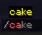

Skript的官方例子分析
 优先级顺序如下:
优先级顺序如下:
符号>数字>字母>汉字
!表示最低优先级(最先加载),如果要写一些function(函数)请在里边写
第一字符含有-的脚本会被sk跳过加载
已经加载的脚本,可更改文件名后再reload一下即可停用
或者你喜欢输入/sk disable <skript>也可以
command /cake:
description: Give the command sender some cake!
cooldown: 1 minute
cooldown message: You need to wait &l%remaining time% &rto use this command again!
cooldown bypass: cake.nocooldown
trigger:
if the player's inventory doesn't have space for cake:
send "&cYou don't have space for cake in your inventory! :("
cancel command cooldown
else:
give cake to the player
send "Here you go!"
command /cake:
cooldown: 1 minute
cooldown message: 剩余冷却时间%remaining time%
trigger:
if the player's inventory doesn't have space for cake:
send "背包满了"
cancel command cooldown
else:
give cake to the player
send "给予蛋糕"
#注册命令固定结构
command /cake:
trigger:
#冷却时间
cooldown: 1 minute
#冷却信息,%remaining time%是该命令里的内置变量,变量是冷却的时间
cooldown message: 剩余冷却时间%remaining time%
#判定玩家背包是否含有空位
if the player's inventory doesn't have space for cake:
#取消该命令冷却时间
cancel command cooldown
command /essentials [<number>] [<text>]:
#指令缩写
Aliases: /ess
#使用方法提示
usage: /ess <number> <text>
#所需权限(需要扩展)
Permission: Ess.all
#无权提示
Permission message: 你没有权限
#可执行者,主要分player和server
executable by: players
trigger:
send "%arg-1%,%arg-2%" to all players
arg-1是第一个输入的值,类型为数值
输入"/ess 33"结果为"33,<none>"
arg-2是第二个输入的值,类型为文本
输入"/ess 33 ces"结果为"33,ces"
类似的arg还有很多,例如[<player>],[<entity>],[<timespan>]
可以代替所有arg的是[<text>],只要有字符串存在就可以转型(后面会讲)
注册指令的方法来写sk,我是极其不推荐的
只要被注册指令,就允许被TAB补全

为此我推荐大家多使用以下的命令
on command "/ces":
cancel event
aliases:
custom helmets = iron block, gold block, diamond block
on inventory click:
inventory action is place all or nothing
cursor slot of player is custom helmets
event-slot is helmet slot of event-player
cancel the event
set {_old helmet} to helmet of player
set helmet of player to cursor slot of player
set cursor slot of player to {_old helmet}
on right click:
tool of player is custom helmets
helmet of player is air
cancel the event
set helmet of player to tool of player
set tool of player to air
on inventory click:
if clicked slot is player's helmet:
set {_new hat} to player's cursor slot
set player's helmet to {_new hat}
delete player's cursor slot
cancel event
on command "/hat":
set player's helmet to player's held item
 官方例子里的
官方例子里的aliases:我单独拿出来讲
aliases:和options:是同一个东西
我拿实际例子给大家看看,大家就明白是怎么用的了
第一种:
on command "/ces":
cancel event
if player's held item is stone or grass:
send "你手上拿的是石头或草方块"
第二种:
aliases:
b = stone, grass
on command "/ces":
cancel event
if player's held item is b:
send "你手上拿的是石头或草方块"
第三种:
options:
block: stone or grass
on command "/ces":
cancel event
if player's held item is {@block}:
send "你手上拿的是石头或草方块"
aliases:进行标签命名时,请不要定义为脚本敏感词汇,例如block,entity
特别需要注意的是options:下的定义标签:后必须有空格
使用标签的格式必须是{@xxx}
我强烈建议大家多使用第三种,简洁方便直观
#天气变为下雨或打雷时:
on weather change to rain or thunder:
cancel event
#当Minecraft内时间为18:00时
at 18:00:
set time to 7:00
at 18:00:可以定义是哪个世界at 18:00 in "world":官方好水*2
options:
radius: 1
aliases:
fuel = coal, coal ore, coal block, any wooden tool
on smelt:
loop blocks in radius {@radius}:
loop-block is chest
if ore slot of block is empty:
loop items of types ore and log:
inventory of loop-block contains loop-item
remove loop-item from inventory of loop-block
set ore of event-block to loop-item
exit loop
if fuel slot of block is empty:
loop items in inventory of loop-block:
loop-item is fuel
remove 1 of loop-item from inventory of loop-block
set fuel of event-block to 1 of loop-item
exit loop
if result slot of block is not empty:
loop-block can hold result of event-block
add result of event-block to loop-block
clear result of event-block
#熔炉燃料燃烧完
on smelt:
#熔炉里燃料开始燃烧
on fuel burn:
command /sethome <string>:
description: Sets your home
permission: skript.home
executable by: players
trigger:
set {homes::%uuid of player%::%arg-1%} to location of player
message "Set your home <green>%arg-1%<reset> to <grey>%location of player%<reset>"
command /delhome <string>:
description: Deletes your home
permission: skript.home
executable by: players
trigger:
clear {homes::%uuid of player%::%arg-1%}
message "Deleted your home <green>%arg-1%<reset>"
command /home <string>:
description: Teleports yourself to your home
permission: skript.home
executable by: players
trigger:
if {homes::%uuid of player%::%arg-1%} is not set:
message "You have not set your home <green>%arg-1%<reset> yet!"
else:
teleport player to {homes::%uuid of player%::%arg-1%}
#设置家
command /sethome <number>:
trigger:
if arg is between 1 and 3:
set {home::%arg%} to player's location
#返回家
command /gohome <number>:
trigger:
if arg is between 1 and 3:
teleport player to location at {home::%arg%}
#删除家
command /delhome <number>:
trigger:
delete {home::%arg%}
#家信息
command /homeinfo:
trigger:
loop {home::*}:
send "家编号:%loop-index% , 坐标:%loop-value%"
局部变量与全局变量的区别
2. 在变量里运用变量的初步学习
3. 复值变量的循环值loop-index与loop-value的区别
#局部变量,仅能在本脚本事件中使用,由下划线"_"开头
{_x}
#全局变量,允许跨脚本使用
{x}
#复值变量,符号必须要含有双冒号"::"
{x::*}
aliases:
blacklisted = TNT, bedrock, obsidian, mob spawner, lava, lava bucket
command /item <items>:
description: Give yourself some items
usage: /item <item(s)>
aliases: i
executable by: players
permission: skript.give
trigger:
if player has permission "skript.give.bypassblacklist":
give arguments to player
else:
loop arguments:
if loop-item is not blacklisted:
give loop-item to player
else:
message "<red>%loop-item%<reset> is blacklisted and thus cannot be spawned"
command /item2 <items>:
description: Give yourself some items
usage: /item2 <item(s)>
aliases: i2
executable by: players
permission: skript.give
trigger:
loop arguments:
if loop-item is enchanted:
if player does not have the permission "skript.give.enchanted":
message "You don't have permission to spawn enchanted items!"
stop
if player has permission "skript.give.%ID of loop-item%":
give loop-item to player
else:
message "You don't have permission to spawn <red>%loop-item%<reset>!"
command /give <item types> to <player>:
description: Give someone else some items
usage: /give <item(s)> to <player>
permission: skript.give
trigger:
send "Giving %argument 1% to %argument 2%" to player
loop argument 1:
if player has permission "skript.give.%ID of loop-item%":
give loop-item to argument 2
send "You recieved %loop-item% from %player%" to argument 2
else:
message "<red>You don't have permission to give away free <red>%loop-item%<reset>!"
on death:
attacker is a player
add 1 to {kill counter::%uuid of attacker%::kills_total}
add 1 to {kill counter::%uuid of attacker%::kills_session}
if {kill counter::%uuid of attacker%::kills_session} > {kill counter::%uuid of attacker%::kills_session_max}:
set {kill counter::%uuid of attacker%::kills_session_max} to {kill counter::%uuid of attacker%::kills_session}
on death of player:
set {kill counter::%uuid of player%::kills_session} to 0
command /kills:
executable by: players
trigger:
message "You have killed %{kill counter::%uuid of player%::kills_session}% mobs and players in this life out of %{kill counter::%uuid of player%::kills_total}% kills in total."
message "Your maximum kill streak is %{kill counter::%uuid of player%::kills_session_max}% kills in one life."
on death:
if attacker is a player:
set {_entity's type} to event-entity's type
add 1 to {kills::%{_entity's type}%}
on command "/killsinfo":
cancel event
loop {kills::*}:
send "杀死实体:%loop-index% , 杀死次数:%loop-value%"

#阻止末影人拿起方块
on enderman pickup:
cancel event
#阻止末影人放置方块
on enderman place:
cancel event
kill the enderman
#破坏玻璃掉落玻璃
on break of glass:
drop glass
#破坏玻璃板掉落玻璃板
on break of glass pane:
drop glass pane
#破坏书架掉书架
on break of bookshelf:
cancel event
set block to air
drop bookshelf
#当玩家拥有skript.god时阻止死亡事件
on damage:
victim is a player
victim has permission "skript.god"
cancel event
#当玩家拥有skript.god时阻止死亡事件
on damage:
if victim is a player:
if victim has permission "skript.god":
cancel event
command /set <string> message <string>:
permission: skript.set.join_message
description: Sets message when player joins
trigger:
if argument-1 is "join" or "leave":
set {custom messages::%argument-1%} to argument-2
message "Set the %argument-1% message to '%argument-2%<reset>'"
else:
message "Only 'join' and 'leave' messages are available here."
command /show <string> message:
description: Displays the message of the day
trigger:
if {custom messages::%argument%} is set:
message {custom messages::%argument%}
else:
message "Only 'join' and 'leave' messages are available here."
on join:
set join message to {custom messages::join}
on quit:
set leave message to {custom messages::leave}
#加入游戏时触发
on join:
set join message to "%player%加入了游戏"
#离开游戏时触发
on quit:
set leave message to "%player%离开了游戏"
#关闭加入提示和离开提示
on join:
set join message to ""
on quit:
set leave message to ""
command /setmotd <text>:
permission: skript.setmotd
description: Sets the message of the day
trigger:
message "Set the MOTD to '%argument%<reset>'"
set {motd} to argument
command /showmotd:
description: Displays the message of the day
trigger:
message {motd}
on join:
message {motd}
server.properties里的motd=
on rightclick with compass:
loop blocks above targeted block:
teleport player to loop-block
stop trigger
on rightclick with compass:
set {_loc} to location 0.5 above the block at target block's location
set pitch of {_loc} to player's location's pitch
set yaw of {_loc} to player's location's yaw
teleport player to {_loc}
 相关知识点:
相关知识点:pitch俯仰角,yaw偏航角
pitch俯仰角 yaw偏航角
yaw偏航角 roll横滚角
roll横滚角 什么？你说Minecraft没有横滚角？
Minecraft现今还不存在可以直接利用的横滚角,但是硬要说存在的,还是有例子的
什么？你说Minecraft没有横滚角？
Minecraft现今还不存在可以直接利用的横滚角,但是硬要说存在的,还是有例子的

command /gui:
trigger:
set {_gui} to a new chest inventory with 6 row with name "Gui Test"
set slot 0 of {_gui} to stone
open {_gui} to player
on inventory click:
if name of event-inventory is "Gui Test":
if index of event-slot = 0:
cancel event
send "You clicked on the slot 0 !"
on command "/gui":
cancel event
open chest inventory with 4 row named "普通的GUI" to player
format gui slot 0 of player with paper named "点击我试试？"
on inventory click:
if inv name of player's current inventory is "普通的GUI":
if clicked slot is 0:
send "你点击的slot为0"